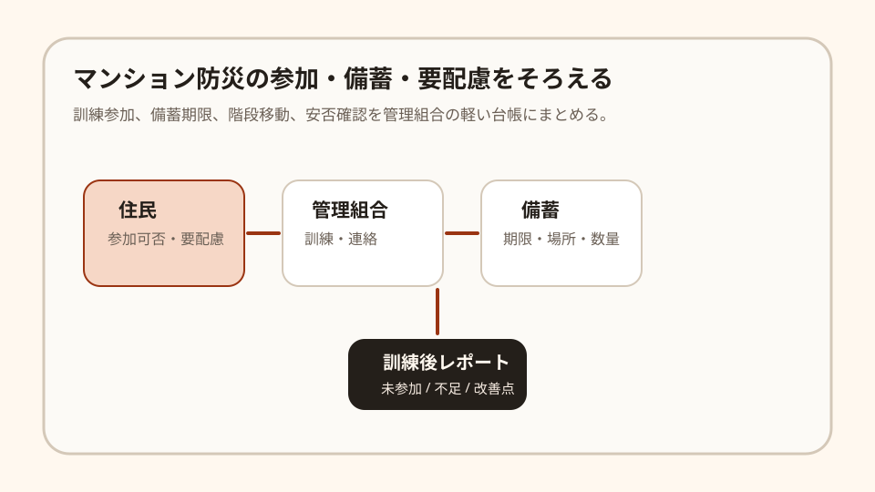

Question Note
マンション防災訓練と備蓄期限のずれを埋める小規模サービス案

全体像
マンション防災では、建物設備だけでなく、住民の安否確認、階段移動が難しい人への配慮、備蓄品の期限、訓練参加率が絡みます。課題は備蓄を買うことだけではなく、誰が参加でき、どの階に注意があり、何がいつ切れるかを管理組合が継続的に把握しにくいことです。
狙いは、社会課題全体を解くことではなく、中小規模マンションの防災訓練、備蓄期限、要配慮メモを年数回そろえる運用に絞ることです。
どの社会問題を切り出すか
| 現場課題 | 何が起きるか | 既存手段の限界 |
|---|---|---|
| 訓練参加が記録に残らない | 毎回同じ住民だけが参加し、未参加世帯の状況が見えない。 | 掲示板と紙の出欠では、階別の偏りや次回フォローが残りにくい。 |
| 備蓄期限が散る | 水、簡易トイレ、電池、毛布などの期限と保管場所が担当者交代で分からなくなる。 | 表計算は作れるが、期限前の確認や購入履歴とつながりにくい。 |
| 要配慮情報を持ちすぎる | 高齢者、乳幼児、ペット、階段移動などの注意点を扱う範囲が曖昧になる。 | 個人情報を細かく集めるほど、管理組合の責任が重くなる。 |
サービス案
管理組合や防災担当向けに、訓練参加、備蓄期限、階別の注意、訓練後の改善点を軽く残す「マンション防災ミニ台帳」を提供します。
- 訓練ごとに参加世帯数、階別参加、未確認世帯を記録する。
- 備蓄品の数量、保管場所、期限、次回購入予定を一覧化する。
- 要配慮メモは個人名ではなく、階・区分・必要配慮の最小情報で持つ。
- 訓練後に不足品、連絡漏れ、次回改善点をPDF化する。
- 理事交代時に、引き継ぎ用CSVを出せるようにする。
100万円規模に抑えた市場設定
初年度は1市内の管理組合、管理会社、防災会を通じて接点を持てる80棟を到達可能市場とし、20棟に導入する前提にします。
| 項目 | 仮定 | 結果 |
|---|---|---|
| 到達可能棟数 | 80棟 | 説明会と個別設定を1人で回せる範囲 |
| 初年度導入 | 20棟 | 管理組合単位で導入 |
| 月額利用料 | 4,000円/棟 | 960,000円/年 |
| 導入支援 | 8,000円 x 8棟 | 64,000円 |
| 初年度売上予想 | 合計 | 1,024,000円 |
収益モデル
- 基本: 管理組合または管理会社経由の月額利用料
- 追加: 初期備蓄リスト作成、訓練後レポート雛形作成
- 追加: 防災会・理事会向けの導入説明会
防災用品の販売手数料ではなく、初期は担当者交代でも残る運用記録への固定課金の方が読みやすいです。
必要なシステム要件と支出
| 領域 | 要件・使い道 | 年額の目安 |
|---|---|---|
| フロント | スマホで訓練参加、備蓄確認、改善メモを入力できる画面 | 0円〜 |
| バックエンド | 棟、訓練、備蓄、期限、階別メモ、権限の管理 | 36,000円 |
| 通知 | 期限前メール、訓練前リマインド | 12,000円 |
| 帳票・記録 | 訓練レポートPDF、備蓄CSV、簡易監査ログ | 18,000円 |
| 運用・専門確認 | ドメイン、バックアップ、個人情報範囲の確認、説明資料 | 74,000円 |
| 年間支出 | 合計 | 140,000円 |
AIを使った開発見積もり
AIを使うと、備蓄台帳、訓練レポート、CSV/PDF、テストデータ作成を短縮できます。ただし、管理組合ごとの情報公開範囲、個人情報の持ち方、訓練現場の使いやすさは人が確認します。
| 作業 | AIで短縮できること | 目安 |
|---|---|---|
| 要件整理 | 理事会ヒアリングから台帳項目と訓練フローを整理 | 3〜5日 |
| プロトタイプ | 備蓄一覧、訓練記録、期限通知画面を作る | 1〜2週間 |
| 本実装 | 権限、CSV、PDF、通知、監査ログを補助 | 2〜3週間 |
| 検証・修正 | 訓練シナリオとダミーデータで不具合を洗う | 1週間 |
売上・支出・利益
売上 - 支出 = 利益
| 項目 | 金額 | 補足 |
|---|---|---|
| 売上 | 1,024,000円 | 月額4,000円 x 20棟 x 12か月 + 導入支援64,000円 |
| 支出 | 140,000円 | システム、通知、帳票、説明資料、個人情報確認 |
| 利益 | 884,000円 | 理事会対応の作業時間は別途 |
必要人数と人材要件
この規模では、実行者1名 + 単発外注を前提にします。
- 実行者: Webアプリを作れ、管理組合や防災担当と会話できる人
- 補助外注: 個人情報、利用規約、管理組合向け資料の確認
- 望ましいスキル: CRUD実装、帳票設計、スマホUI、防災訓練の業務整理
リスクと最初の検証
- 理事会で月額費用を承認できるか。
- 要配慮情報を集めすぎて管理負担が増えないか。
- 訓練当日にスマホ入力が現場の邪魔にならないか。
最初は3棟で1回の防災訓練だけ試し、未参加把握、備蓄期限確認、次回改善点の引き継ぎが楽になるかを見ます。
結論
このテーマは、街全体の防災基盤ではなく、マンション単位の訓練と備蓄のずれを整える方向に切ると、100万円規模でも成立しやすいです。